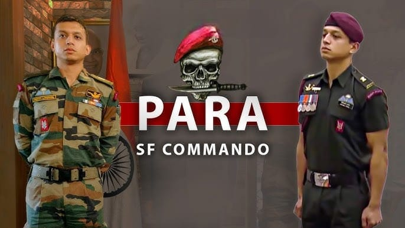
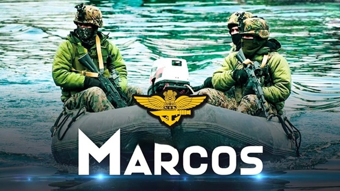

THE SPECIAL FORCE
Indian Special Forces are elite military units specializing in counter-terrorism, covert operations, and high-risk missions. Key units include the MARCOS (Marine Commandos) for naval warfare, NSG (National Security Guard) for counter-terrorism, Para SF for airborne and surgical strikes, and GARUD Commando Force for air force special operations.India has elite special forces such as:
- Established: 1966 (Raising Day - July 1)
- Parachute-inserted, high-altitude warfare specialists, known for deep-penetration strikes, hostage rescues, and urban warfare. Operate in extreme conditions such as mountains, jungles, and deserts.
- Tavor TAR-21
- SIG Sauer SG 716
- AK-47 variants
- M4 Carbine
- heckler and koch 416,
- Barrett M82 sniper rifle
- Surgical strikes and behind-enemy-lines operations
- Counter-insurgency and counter-terrorism
- High-altitude warfare (especially in Kashmir and Northeast India)
- Hostage rescue and urban warfare
- Established: 1987 (Raising Day - februaury 14)
- Underwater Scuba/SEAL Operations
- Rapid Boat Insertion & Extraction
- Coastal & Riverine Ambush Tactics
- Heliborne Assault & Combat Diving
- IWI Tavor TAR-21
- Glock 17 & 19 Pistols
- Franchi SPAS-15 Shotgun
- Heckler & Koch MP5
- DRDO T-91 Underwater Rifle
- Maritime Sabotage & Underwater Warfare
- Anti-Piracy & Shipboarding Operations
- Hostage Rescue (Sea-Based)
- Special Reconnaissance for Naval Targets
- Riverine & Coastal Counter-Terrorism
- Established: 2004(Raising Day - 6 february )
- Airborne Rapid Deployment
- Base Protection & UAV Reconnaissance
- Fast-Roping & Heliborne Assaults
- Night Combat & Thermal Optics
- Tavor TAR-21 & X95 Rifles
- MP5 Submachine Gun
- Beretta 92FS & Glock 17 Pistols
- SVD Dragunov Sniper Rifle
- Airfield & Base Security
- Anti-Hijacking Operations
- Deep Reconnaissance for Airstrikes
- Established: 1984 (Raising Day - 16 october)
- Close-Quarter Battle (CQB) Tactics
- Rapid Building/Vehicle Entry (Breaching)
- SWAT-Style Urban Intervention
- Covert High-Precision Strikes
- SIG MPX & MP5 Submachine Guns
- CornerShot Weapon System
- Glock 17, 19 & SIG P226 Pistols
- Remington 700 Sniper Rifle
- Hostage Rescue & Anti-Terrorism
- Counter-IED & Bomb Disposal
- VIP Security (SPG Integration)
- High-Value Target Neutralization
Para SF (Army)
Mode of Operation:
Weapons Used:
Main Tasks:
MARCOS (Marine Commandos - Navy)
Mode of Operation:
Weapons Used:
Main Tasks:
Garud Commando Force (Air Force)
.jpeg)